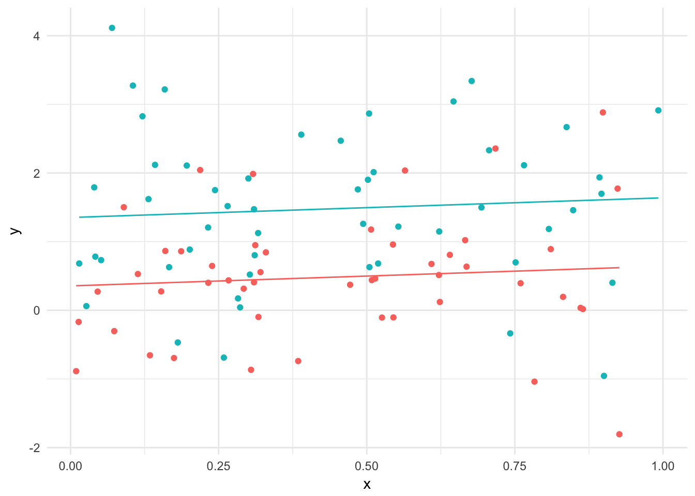
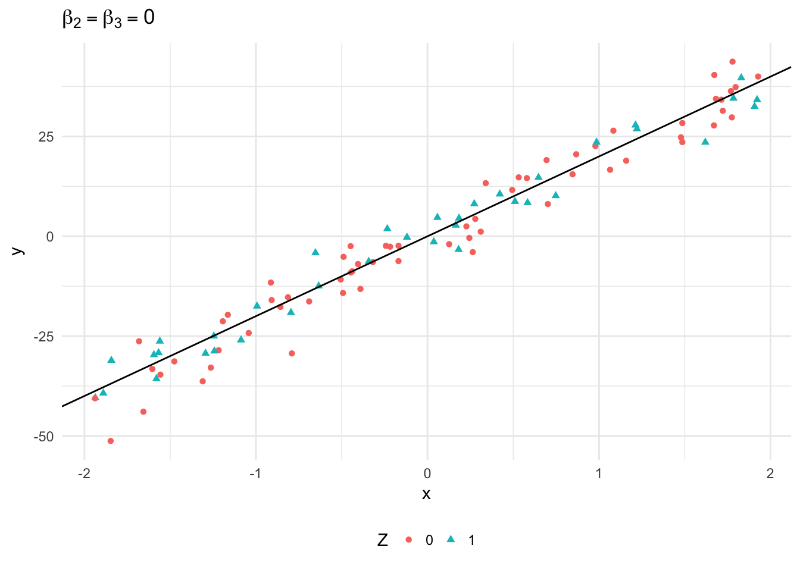
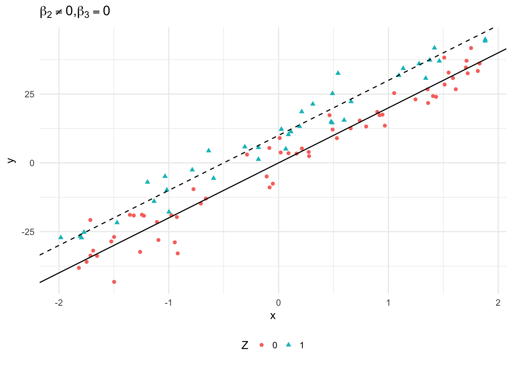
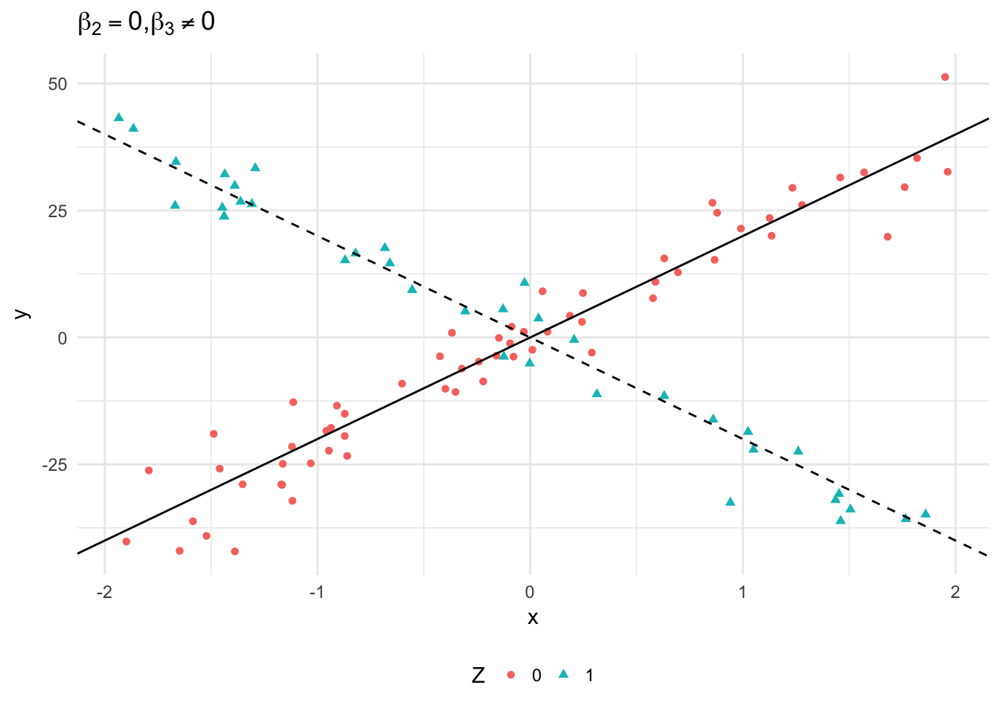
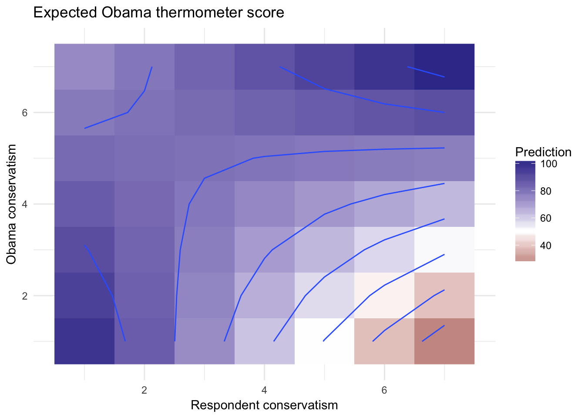
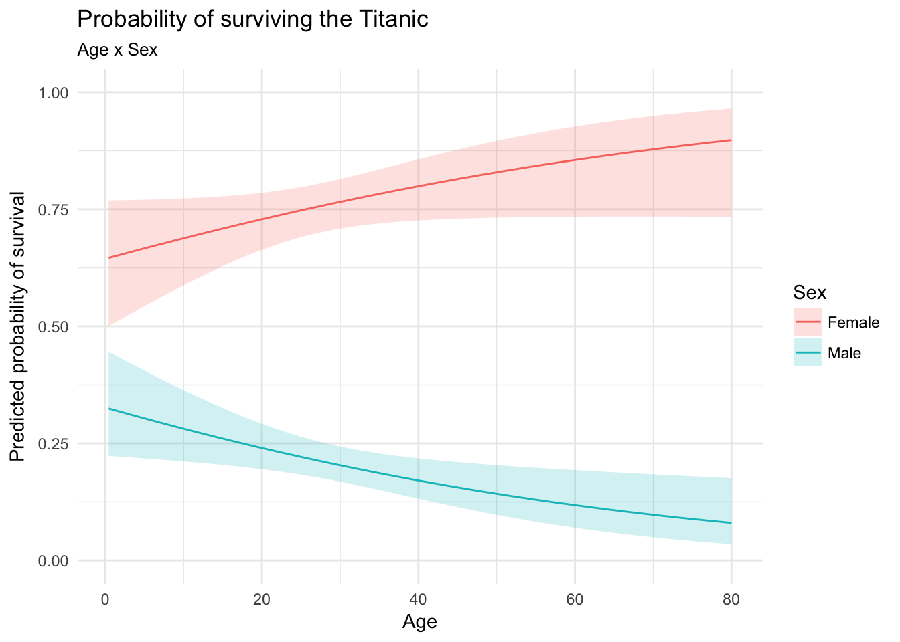
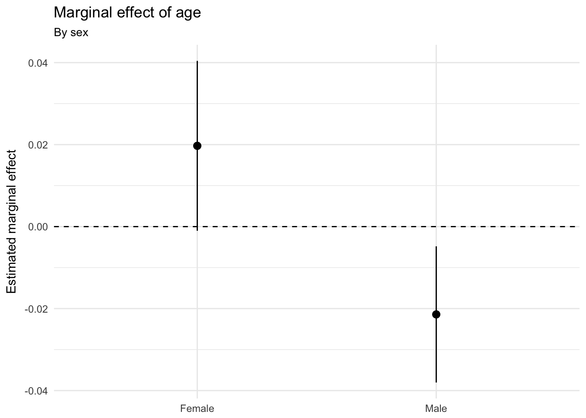

Interaction terms in regression models
MACS 30200 - Perspectives on Computational Research
Objectives
- Define multiplicative interaction models and conditional effects
- Review mathematics required to calculate standard errors and conduct inference
- Identify major types of conceptual interactions
- Demonstrate how to estimate multiplicative interaction models in R
- Implement hypothesis testing and marginal effects plots
- Extend discussion to generalized linear models
library(tidyverse)
library(forcats)
library(broom)
library(modelr)
library(stringr)
library(titanic)
library(rcfss)
library(car)
library(plotly)
library(haven)
library(coefplot)
options(digits = 3)
set.seed(1234)
theme_set(theme_minimal())Multiplicative interaction models
Additive model
Consider a linear additive model of the form:
\[Y = \beta_0 + \beta_1 X + \beta_2 Z + e_i\]
By definition, we expect \(\beta_1\) to estimate the direct effect (or relationship) of \(X_1\) on \(Y\) independent of \(Z\).1 A data generating process with a continuous value for \(X\) and \(Y\) and a dichotomous value for \(Z\) following this functional form would look like:
n_sim <- 100
additive <- data_frame(x = runif(n_sim),
z = runif(n_sim)) %>%
mutate(z = ifelse(z > .5, 1, 0),
y = x + z + rnorm(n_sim))
additive %>%
add_predictions(lm(y ~ x + z, data = .)) %>%
ggplot(aes(x, y, color = factor(z))) +
geom_point() +
geom_line(aes(y = pred)) +
theme(legend.position = "none")
Consider the net impact of \(X\) on \(Y\):
\[E(Y) = \beta_0 + \beta_1 X + \beta_2 Z\]
If we take the first derivative of this with respect to \(X\), we get:
\[\frac{\delta E(Y)}{\delta X} = \beta_1\]
In other words, the marginal impact of \(X\) on \(Y\) is constant and completely independent of \(Z\). Likewise, the marginal impact of \(Z\) on \(Y\) is:
\[\frac{\delta E(Y)}{\delta Z} = \beta_2\]
Interpreting the estimated parameters and standard errors is relatively straightforward in this setup.
Multiplicative interaction model
But the additive functional form only makes sense if you theoretically believe the effects of \(X\) and \(Z\) are independent. Consider instead a simple interactive model with three variables:
\[Y = \beta_0 + \beta_1 X + \beta_2 Z + \beta_3 XZ + e_i\]
Here \(XZ\) is just that: \(X\) multiplied by \(Z\). \(\beta_1\) and \(\beta_2\) are commonly (and erroneously) referred to as the direct effects of \(X\) and \(Z\) on \(Y\),2 and \(\beta_3\) as the coefficient for the interaction term.
With the variables multiplied together, the net impact of \(X\) on \(Y\) is now defined by:
\[ \begin{split} E(Y) & = \beta_0 + \beta_1 X + \beta_2 Z + \beta_3 XZ \\ & = \beta_0 + \beta_2 Z + (\beta_1 + \beta_3 Z) X \end{split} \]
And the first derivative of this with respect to \(X\) is:
\[\frac{\delta E(Y)}{\delta X} = \beta_1 + \beta_3 Z\]
In other words, the marginal impact of \(X\) on \(Y\) now explicitly depends on the value of \(Z\). Another way of phrasing the expected value function above is:
\[E(Y) = \beta_0 + \beta_2 Z + \psi_1 X\]
where \(\psi_1 = \beta_1 + \beta_3 Z\) is a “quasi-coefficient” for the marginal impact of \(X\) on \(Y\). Likewise with respect to \(Z\):
\[ \begin{split} E(Y) & = \beta_0 + \beta_1 X + (\beta_2 + \beta_3 X) Z \\ & = \beta_0 + \beta_1 X + \psi_2 Z \end{split} \]
In this type of interactive model, each interacted covariate’s influence on \(Y\) is now conditional on the values of the other explanatory variable(s) with which it is interacted.
- The direct effects \(\beta_1\) and \(\beta_2\) represent the conditional impact of \(X\) and \(Z\) on \(Y\) conditional on the value of the other interacted variable being zero.
If \(Z = 0\), then:
\[ \begin{split} E(Y) & = \beta_0 + \beta_1 X + \beta_2 (0) + \beta_3 X (0) \\ & = \beta_0 + \beta_1 X \end{split} \]
If \(X = 0\), then:
\[ \begin{split} E(Y) & = \beta_0 + \beta_1 (0) + \beta_2 Z + \beta_3 (0) Z \\ & = \beta_0 + \beta_2 Z \end{split} \]
- Under these circumstances, \(\psi_1 = \beta_1\) and \(\psi_2 = \beta_2\)
- \(\hat{\beta}_1\) and \(\hat{\beta}_2\) are relevant, but only in the specific circumstance where the interacted variable is zero.
- The interaction coefficient \(\beta_3\) indicates whether or not the effect of \(X\) on \(Y\) is systematically (and monotonically/linearly) different over different values of \(Z\), and vice-versa
- \(+\beta_3\) means the impact of \(X\) on \(Y\) grows more positive/less negative at larger values of \(Z\), and less positive/more negative at lower values of \(Z\)
- \(-\beta_3\) means the impact of \(X\) on \(Y\) grows less positive/more negative at larger values of \(Z\), and more positive/less negative at lower values of \(Z\)
- In truth, what we care most about are not \(\beta_1\), \(\beta_2\), and \(\beta_3\), but instead \(\psi_1\) and \(\psi_2\)
In an interactive model, all influences of interacted variables are now necessarily conditional on the value(s) of the variable(s) with which they are interacted.
Conducting inference
That said, a multiplicative interaction model is still a standard linear regression model, so the same principles of OLS apply. That means we can obtain estimates of the \(\beta\)s in the standard way, and we can estimate standard errors for those coefficient estimates in the usual way (as the square roots of the diagonal elements of the variance-covariance matrix \(\hat{\sigma}^2 (\mathbf{X}' \mathbf{X})^{-1}\)).
The problem is that we don’t care about these quantities - we care about the marginal effects, that is \(\psi_1\) and \(\psi_2\). Calculating point estimates for these is trivial:
\[\hat{\psi}_1 = \hat{\beta}_1 + \hat{\beta}_3 Z\] \[\hat{\psi}_2 = \hat{\beta}_2 + \hat{\beta}_3 X\]
But in order to conduct inference, we need to know if these values are statistically distinguishable from zero. For that, we need estimate the variance for these parameters. Three key rules help us define the equation for their variance. Where \(X\) and \(Y\) are random variables and \(a\) is a constant:
- \(\text{Var}(aX) = a^2 \text{Var}(X)\)
- \(\text{Var}(X+Y) = \text{Var}(X) + \text{Var}(Y) + 2 \text{Cov}(X,Y)\)
- \(\text{Cov}(X, aY) = a \text{Cov}(X,Y)\)
So if we are interested in \(\text{Var} (\hat{\psi}_1)\):
\[\widehat{\text{Var}(\hat{\psi}_1}) = \widehat{\text{Var} (\hat{\beta}_1)} +Z^2 \widehat{\text{Var} (\hat{\beta}_3)} + 2 Z \widehat{\text{Cov} (\hat{\beta}_1, \hat{\beta}_3)}\]
Likewise for \(\text{Var} (\hat{\psi}_2)\):
\[\widehat{\text{Var}(\hat{\psi}_2}) = \widehat{\text{Var} (\hat{\beta}_2)} + X^2 \widehat{\text{Var} (\hat{\beta}_3)} + 2 X \widehat{\text{Cov} (\hat{\beta}_2, \hat{\beta}_3)}\]
- Both depend on - but are not the same as - the estimated variances for the direct effects \(\beta_1\) and \(\beta_2\), and/or the interaction term \(\beta_3\).
- Both also depend on the level/value of the interacted variable. This means that just as the slope of \(X\) on \(Y\) depends on \(Z\), so too does the estimated variability around that slope estimate also depend on \(Z\).
Types of interactions
There are several major types of interaction terms that can occur within regression models. Here I present examples of these major types using simulated data.
Two dichtomous covariates
\[Y = \beta_0 + \beta_1 D_1 + \beta_2 D_2 + \beta_3 D_1 D_2 + e_i\]
In this model, the expected value for \(Y\) can take on four possible values:
\[ \begin{split} E(Y | D_1 = 0, D_2 = 0) & = \beta_0 \\ E(Y | D_1 = 1, D_2 = 0) & = \beta_0 + \beta_1 \\ E(Y | D_1 = 0, D_2 = 1) & = \beta_0 + \beta_2 \\ E(Y | D_1 = 1, D_2 = 1) & = \beta_0 + \beta_1 + \beta_2 + \beta_3 \\ \end{split} \]
Consider data generated from the following model:
\[Y = 10 + 20 D_1 - 20 D_2 + 40 D_1 D_2 + e, \text{ where } e \sim N(0, 5)\]
two_dich <- data_frame(x = runif(n_sim),
z = runif(n_sim)) %>%
mutate_at(vars(x, z), funs(ifelse(. > .5, 1, 0))) %>%
mutate(y = 10 + 20 * x - 20 * z + 40 * (x * z) + rnorm(n_sim, 0, 5))We could visualize it a couple of ways. First as a histogram:
ggplot(two_dich, aes(y, color = interaction(x, z))) +
geom_density() +
scale_color_discrete(labels = c("D1 = D2 = 0",
"D1 = 1, D2 = 0",
"D1 = 0, D2 = 1",
"D1 = D2 = 1"),
guide = guide_legend(nrow = 2)) +
labs(title = expression(paste("Values of ", Y, " for various combinations of values of ", D[1], ",", D[2])),
x = "Value of Y",
color = NULL) +
theme(legend.position = "bottom")
Or as a boxplot:
ggplot(two_dich, aes(interaction(z, x), y)) +
geom_boxplot() +
scale_x_discrete(labels = c(expression("D1 = D2 = 0"),
expression("D1 = 0, D2 = 1"),
expression("D1 = 1, D2 = 0"),
expression("D1 = D2 = 1"))) +
labs(title = expression(paste("Values of ", Y, " for various combinations of values of ", D[1], ",", D[2])),
x = NULL,
y = "Values of Y")
This illustrates that:
- The effect of a change in \(D_2\) varies depending on the value of \(D_1\)
- The effect is negative when \(D_1 = 0\)
- But positive when \(D_1 = 1\)
- Similar effects for the change in \(D_1\) relative to \(D_2\)
One dichotomous and one continuous covariate
More commonly, we have a situation where one variable in the interaction is continous and the other is dichotomous:
\[Y = \beta_0 + \beta_1 X + \beta_2 D + \beta_3 XD + e_i\]
\[ \begin{split} E(Y | X, D = 0) & = \beta_0 + \beta_1 X \\ E(Y | X, D = 1) & = (\beta_0 + \beta_2) + (\beta_1 + \beta_3) X \end{split} \]
This suggests four possibilities:
\(X\) has both the same slope and the same intercept for \(D=0\) and \(D=1\); that is, \(\beta_2 = \beta_3 = 0\).
data_frame(x = runif(n_sim, -2, 2), z = runif(n_sim, -2, 2)) %>% mutate_at(vars(z), funs(ifelse(. > .5, 1, 0))) %>% mutate(y = 0 + 20 * x + 0 * z + 0 * (x * z) + rnorm(n_sim, 0, 5)) %>% ggplot(aes(x, y, color = factor(z), shape = factor(z))) + geom_vline(xintercept = 0, alpha = .3) + geom_hline(yintercept = 0, alpha = .3) + geom_point() + geom_abline(intercept = 0, slope = 20) + labs(title = expression({beta[2] == beta[3]} == 0), color = "Z", shape = "Z") + theme(legend.position = "bottom")
\(X\) has both the same slope but different intercepts for \(D=0\) and \(D=1\); that is, \(\beta_2 \neq 0\) and \(\beta_3 = 0\).
data_frame(x = runif(n_sim, -2, 2), z = runif(n_sim, -2, 2)) %>% mutate_at(vars(z), funs(ifelse(. > .5, 1, 0))) %>% mutate(y = 0 + 20 * x + 10 * z + 0 * (x * z) + rnorm(n_sim, 0, 5)) %>% ggplot(aes(x, y, color = factor(z), shape = factor(z))) + geom_vline(xintercept = 0, alpha = .3) + geom_hline(yintercept = 0, alpha = .3) + geom_point() + geom_abline(intercept = 0, slope = 20) + geom_abline(intercept = 10, slope = 20, linetype = 2) + labs(title = expression(paste({beta[2] != 0}, ",", beta[3] == 0)), color = "Z", shape = "Z") + theme(legend.position = "bottom")
\(X\) has both the same intercept but different slopes for \(D=0\) and \(D=1\); that is, \(\beta_2 = 0\) and \(\beta_3 \neq 0\).
data_frame(x = runif(n_sim, -2, 2), z = runif(n_sim, -2, 2)) %>% mutate_at(vars(z), funs(ifelse(. > .5, 1, 0))) %>% mutate(y = 0 + 20 * x + 0 * z + -40 * (x * z) + rnorm(n_sim, 0, 5)) %>% ggplot(aes(x, y, color = factor(z), shape = factor(z))) + geom_vline(xintercept = 0, alpha = .3) + geom_hline(yintercept = 0, alpha = .3) + geom_point() + geom_abline(intercept = 0, slope = 20) + geom_abline(intercept = 0, slope = -20, linetype = 2) + labs(title = expression(paste({beta[2] == 0}, ",", beta[3] != 0)), color = "Z", shape = "Z") + theme(legend.position = "bottom")
\(X\) has both different intercepts and different slopes for \(D=0\) and \(D=1\); that is, \(\beta_2 \neq 0\) and \(\beta_3 \neq 0\).
data_frame(x = runif(n_sim, -2, 2), z = runif(n_sim, -2, 2)) %>% mutate_at(vars(z), funs(ifelse(. > .5, 1, 0))) %>% mutate(y = 0 + 20 * x + 20 * z + -40 * (x * z) + rnorm(n_sim, 0, 5)) %>% ggplot(aes(x, y, color = factor(z), shape = factor(z))) + geom_vline(xintercept = 0, alpha = .3) + geom_hline(yintercept = 0, alpha = .3) + geom_point() + geom_abline(intercept = 0, slope = 20) + geom_abline(intercept = 20, slope = -20, linetype = 2) + labs(title = expression(paste({beta[2] == 0}, ",", beta[3] != 0)), color = "Z", shape = "Z") + theme(legend.position = "bottom")
Two continuous covariates
It is also common to have a model in which both interacted covariates are continuous:
\[Y = \beta_0 + \beta_1 X_1 + \beta_2 X_2 + \beta_3 X_1 X_2 + e_i\]
The interpretation here is that each covariate’s effect on \(Y\) changes smoothly and monotonically as a function of the other covariate.
# no interactive effects
data_frame(x = runif(n_sim, 0, 10),
z = runif(n_sim, 0, 10),
y = 10 + 10 * x - 10 * z + 0 * x * z) %>%
plot_ly(x = ~x, y = ~ z, z = ~ y, type = "mesh3d") %>%
layout(title = "No interactive effects")# inteactive effects
data_frame(x = runif(n_sim, 0, 10),
z = runif(n_sim, 0, 10),
y = 10 + 10 * x - 10 * z + 10 * x * z) %>%
plot_ly(x = ~x, y = ~ z, z = ~ y, type = "mesh3d") %>%
layout(title = "Interactive effects")Note that in the first figure, the marginal influence of a change in \(X_1\) on \(Y\) is not dependent on the value of \(X_2\). By contrast, in the next figure when values of \(X_1\) are small, the effect of \(X_2\) on \(Y\) is both negative and relatively small; however, when \(X_1\) is large, the effect of \(X_2\) on \(Y\) is both large and positive.
Quadratic, cubic, and other polynomial effects
Curvilinear or quadratic relationships for a single variable are also a type of interactive model. For example, consider a second-order polynomial regression:
\[Y = \beta_0 + \beta_1 X + \beta_2 X^2 + e\]
The marginal effect of \(X\) on \(Y\) is:
\[\frac{\delta E(Y)}{\delta X} = \beta_1 + 2 \beta_2 X\]
This tells us that the marginal effect of \(X\) on \(Y\) depends linearly on the value of \(X\) itself.
data_frame(x = runif(n_sim, -2, 2)) %>%
mutate(y = 10 + 10 * x - (50 * x^2) + rnorm(n_sim, 0, 5)) %>%
add_predictions(lm(y ~ poly(x, 2, raw = TRUE), data = .)) %>%
ggplot(aes(x, y)) +
geom_point() +
geom_line(aes(y = pred)) +
labs(title = "Example of a quadratic relationship")
data_frame(x = runif(n_sim, -2, 2)) %>%
mutate(y = -500 - 20 * x + 300 * x^2 + rnorm(n_sim, 0, 50)) %>%
add_predictions(lm(y ~ poly(x, 2, raw = TRUE), data = .)) %>%
ggplot(aes(x, y)) +
geom_point() +
geom_line(aes(y = pred)) +
labs(title = "Example of a quadratic relationship")
data_frame(x = runif(n_sim, -2, 2)) %>%
mutate(y = 10 + 10 * x - 50 * x^2 + 300 * x^3 + rnorm(n_sim, 0, 300)) %>%
add_predictions(lm(y ~ poly(x, 3, raw = TRUE), data = .)) %>%
ggplot(aes(x, y)) +
geom_point() +
geom_line(aes(y = pred)) +
labs(title = "Example of a cubic relationship")
Higher-order interaction terms
We could expand on this process and adopt higher-order interaction models:
\[ \begin{align} Y = \beta_0 &+ \beta_1 X_1 + \beta_2 X_2 + \beta_3 X_3 + \beta_4 X_1 X_2 \\ & + \beta_5 X_1 X_3 + \beta_6 X_2 X_3 + \beta_7 X_1 X_2 X_3 + e \end{align} \]
The various \(X\)s could be continuous or dichotomous, with corresponding interpretations. In this model, each of the three \(X\)s conditions the influence of the other. This can be become very complex and confusing. In the simplest case with two dichotmous variables and one continuous \(X\):
\[ \begin{align} Y = \beta_0 &+ \beta_1 X + \beta_2 D_1 + \beta_3 D_2 + \beta_4 X D_1 \\ & + \beta_5 X D_2 + \beta_6 D_1 D_2 + \beta_7 X D_1 D_2 + e \end{align} \]
data_frame(x = runif(n_sim, -2, 2),
d1 = runif(n_sim),
d2 = runif(n_sim)) %>%
mutate_at(vars(d1, d2), funs(ifelse(. > .5, 1, 0))) %>%
mutate(y = 10 + 10 * x + 10 * d1 - 20 * d2 - 20 * x * d1 + 20 * x *d2 - 50 * x * d1 * d2 + rnorm(n_sim, 0, 10)) %>%
add_predictions(lm(y ~ x * d1 * d2, data = .)) %>%
ggplot(aes(x, y)) +
facet_grid(d1 ~ d2, labeller = label_both) +
geom_point() +
geom_line(aes(y = pred))
Here the slope of \(Y\) on \(X\) is positive when \(D_1 = 0\) and negative when \(D_1 = 1\). In addition, \(D_2\) has an exacerbating effect: its presence makes the effect of \(X\) on \(Y\) stronger, irrespective of whether the effect is positive or negative.
Key rules for estimating and interpreting interaction terms
- Don’t omit the “direct effects” components from an interactive regression model. Doing so leads to bias in your estimates of the parameters - see Brambor et. al. (2006) for more details.
- Because the direct effects are the impact of one variable on the dependent variable when the other is zero, it is important that zero be a meaningful value.
- E.g. if you interact with time, the year 0 A.D. is pretty out-of-sample
- Rescaling the variables in an interactive model can make the direct effects appear statistically distinguishable from zero (recall that the standard errors of the interactive effect are influenced directly by the value of the constituent term) - that doesn’t mean the variables’ effects are meaningful.
- Remember that there are more flexible alternatives to polynomial terms in a regression model.
- Three-way interactions are incredibly difficult to interpret and understand substantively. If possible, split the sample by a dummy variable and estimate multiple regression models.
Estimating models with multiplicative interactions
# get nes data
nes <- read_dta("data/nes2008.dta") %>%
select(obama_therm_post, partyid3, libcon7, libcon7_obama) %>%
mutate_each(funs(ifelse(is.nan(.), NA, .))) %>%
rename(ObamaTherm = obama_therm_post,
RConserv = libcon7,
ObamaConserv = libcon7_obama) %>%
mutate(GOP = ifelse(partyid3 == 3, 1, 0)) %>%
select(-partyid3) %>%
na.omitLet’s look at data from the 2008 American national election study. The outcome of interest is the Obama feeling thermometer (ObamaTherm). Our covariates are:
RConserv- the respondent’s self-placement on a liberal/conservative scale, ranging in value from 1 (extremely liberal) to 7 (extremely conservative)ObamaConserv- the respondent’s placement of President Obama on the same 1 (extremely liberal) to 7 (extremely conservative) scaleGOP- a dummy variable coded 1 if the respondent self-identified as a Republican, and 0 otherwise
summary(nes)## ObamaTherm RConserv ObamaConserv GOP
## Min. : 0.0 Min. :1.00 Min. :1.00 Min. :0.00
## 1st Qu.: 50.0 1st Qu.:2.00 1st Qu.:2.00 1st Qu.:0.00
## Median : 75.0 Median :5.00 Median :2.00 Median :0.00
## Mean : 69.6 Mean :4.24 Mean :2.98 Mean :0.24
## 3rd Qu.:100.0 3rd Qu.:6.00 3rd Qu.:4.00 3rd Qu.:0.00
## Max. :100.0 Max. :7.00 Max. :7.00 Max. :1.00A basic linear model would look like this:
obama_base <- lm(ObamaTherm ~ RConserv + GOP, data = nes)
tidy(obama_base)## term estimate std.error statistic p.value
## 1 (Intercept) 93.4 1.572 59.4 0.00e+00
## 2 RConserv -4.1 0.368 -11.2 9.48e-28
## 3 GOP -26.5 1.587 -16.7 2.82e-57glance(obama_base)## r.squared adj.r.squared sigma statistic p.value df logLik AIC BIC
## 1 0.325 0.324 23.1 336 9.28e-120 3 -6365 12738 12759
## deviance df.residual
## 1 741815 1394This suggests that conservatives and Republicans like Obama less than liberals and Democrats. What a shock!
Model estimation
Let’s consider a couple of interactive models. First, while Obama became a polarizing figure in partisan terms after taking office, in 2008 he was seen as a uniting figure and attracted substantial support from moderate Republicans. This suggests that while most people will like or hate Obama on the basis of their own ideology, Republicans were especially responsive in this regard: even more so than for others (especially Democrats), we might expect conservative Republicans to really dislike Obama, and moderate or liberal Republicans to support him. This suggests a model of the form:
\[ \begin{align} \text{Obama thermometer} = \beta_0 &+ \beta_1 (\text{Respondent conservatism}) + \beta_2 (\text{GOP respondent})\\ & + \beta_3 (\text{Respondent conservatism}) (\text{GOP respondent}) + e \end{align} \]
So we expect \(\beta_1 < 0\) (conservatives will be more negative towards Obama), \(\beta_2 < 0\) (Republicans will be more negative towards Clinton), and \(\beta_3 < 0\) (the responsiveness of Obama’s thermometer score to the respondent’s ideology will be even greater - that is, more negative - among Republicans).
obama_ideo_gop <- lm(ObamaTherm ~ RConserv * GOP, data = nes)
tidy(obama_ideo_gop)## term estimate std.error statistic p.value
## 1 (Intercept) 92.25 1.640 56.24 0.00e+00
## 2 RConserv -3.81 0.388 -9.81 5.26e-22
## 3 GOP -11.07 6.684 -1.66 9.79e-02
## 4 RConserv:GOP -2.86 1.201 -2.38 1.75e-02glance(obama_ideo_gop)## r.squared adj.r.squared sigma statistic p.value df logLik AIC BIC
## 1 0.328 0.326 23 226 1.15e-119 4 -6362 12735 12761
## deviance df.residual
## 1 738815 1393Note that
RConserv * GOPautomatically is expanded to include the constituent terms in the regression model.
The results are as expected. For non-Republicans (that is when GOP = 0):
\[ \begin{align} E(\text{Obama thermometer}) = 92.255 & -3.805 (\text{Respondent conservatism}) -11.069 (0)\\ & -2.856 (\text{Respondent conservatism} \times 0) \\ = 92.255 & -3.805 (\text{Respondent conservatism}) \end{align} \]
while for Republicans (that is, GOP = 1), the equation is:
\[ \begin{align} E(\text{Obama thermometer}) & = (92.255 -11.069 (1)) + (-3.805 -2.856 (\text{Respondent conservatism} \times 1)) \\ & = 81.186 -6.661 (\text{Respondent conservatism}) \end{align} \]
In our previous language, \(\hat{\psi}_1 = -6.661\); that is, the “quasi-coefficient” estimate for the effect of a respondent’s conservatism on their Obama thermometer score.
nes %>%
add_predictions(obama_ideo_gop) %>%
ggplot(aes(RConserv, ObamaTherm, color = factor(GOP))) +
geom_jitter(alpha = .5) +
geom_line(aes(y = pred)) +
scale_color_manual(values = c("blue", "red")) +
labs(x = "Respondent conservatism",
y = "Obama thermometer score") +
theme(legend.position = "none")
Separate models
Compare these results to two separate models where we split the data into two samples: Republicans and non-Republicans:
tidy(lm(ObamaTherm ~ RConserv, data = filter(nes, GOP == 0)))## term estimate std.error statistic p.value
## 1 (Intercept) 92.25 1.598 57.7 0.00e+00
## 2 RConserv -3.81 0.378 -10.1 7.87e-23tidy(lm(ObamaTherm ~ RConserv, data = filter(nes, GOP == 1)))## term estimate std.error statistic p.value
## 1 (Intercept) 81.19 6.98 11.62 1.90e-26
## 2 RConserv -6.66 1.22 -5.44 1.04e-07We get “almost” the same results. This is because the model with the interaction terms allows both different slopes (on RConserv) and intercepts for Republicans and non-Republicans. While the point estimates are identical, the standard errors are not so. This is because the interactive model estimates the two implicit models “together”, and therefore is (very slightly) more efficient than the separate models. In large data sets, the difference is tiny.
Causal direction
It is also the case that if GOP membership moderates the association between conservatism and Obama’s thermometer score, then it is also true that conservatism moderates the association between those scores and party membership:
nes %>%
data_grid(RConserv, GOP) %>%
add_predictions(obama_ideo_gop) %>%
spread(GOP, pred) %>%
mutate(diff = `1` - `0`) %>%
ggplot(aes(RConserv, diff)) +
geom_point() +
labs(title = "Expected Obama thermometer score",
x = "Respondent conservatism",
y = "First difference between Republicans\nand non-Republicans")
For extremely liberal respondents (RConserv = 1), the difference in the expected Obama thermometer score between a Republican and a non-Republican is:
\[ \begin{align} \hat{\psi}_2 & = \hat{\beta}_2 + \hat{\beta}_3 (1) \\ & = -11.069 + (-2.856) (1) \\ & = -13.925 \end{align} \]
Similarly, for an extremely conservative respondents (RConserv = 7), the difference is:
\[ \begin{align} \hat{\psi}_2 & = \hat{\beta}_2 + \hat{\beta}_3 (7) \\ & = -11.069 + (-2.856) (7) \\ & = -31.058 \end{align} \]
Consistent with our theory, the differences (between Republicans and non-Republicans) in opinions about Obama are largest among those who are very conservative, and smallest among those who are most liberal.
Calculating standard errors
Now we need to calculate standard errors to determine if the point estimates of the \(\psi\)s are statistically significant. We can rewrite the functional form as:
\[ \begin{align} \text{Obama thermometer} = &\beta_0 + (\beta_1 + \beta_3 \text{GOP}) (\text{Respondent conservatism}) + \\ & \beta_2 (\text{GOP respondent}) + e \\ = &\beta_0 + \psi_1 (\text{Respondent conservatism}) + \beta_2 (\text{GOP respondent}) + e \end{align} \]
Calculating the point estimates \(\hat{\psi}\) is straightforward:
coef(obama_ideo_gop)[["GOP"]] + coef(obama_ideo_gop)[["RConserv:GOP"]]## [1] -13.9Likewise, we can recover the standard errors using the formula:
\[\hat{\sigma}_{\hat{\psi}_1} = \sqrt{\widehat{\text{Var}(\hat{\beta}_1)} + (\text{GOP})^2 \widehat{\text{Var}(\hat{\beta_3})} + 2 (\text{GOP}) \widehat{\text{Cov}(\hat{\beta}_1 \hat{\beta}_3)}}\]
We can retrieve all of the necessary elements from the variance-covariance matrix using the vcov() function:
vcov(obama_ideo_gop)## (Intercept) RConserv GOP RConserv:GOP
## (Intercept) 2.691 -0.574 -2.691 0.574
## RConserv -0.574 0.151 0.574 -0.151
## GOP -2.691 0.574 44.677 -7.797
## RConserv:GOP 0.574 -0.151 -7.797 1.442sqrt(vcov(obama_ideo_gop)["RConserv", "RConserv"] +
(1)^2 * vcov(obama_ideo_gop)["RConserv:GOP", "RConserv:GOP"] +
2 * 1 * vcov(obama_ideo_gop)["RConserv", "RConserv:GOP"])## [1] 1.14The ratio of the point estimate to the standard error yields a \(t\)-statistic of -13.582, which indicates that the marginal association between the thermometer score for Obama and respondent conservatism is very precisely estimated (\(p < .001\)).
If we want to conduct inference on \(\hat{\psi}_2\) (the marginal effect of GOP on \(Y\)), we can do that as well:
# function to get point estimates and standard errors
# model - lm object
# mod_var - name of moderating variable in the interaction
instant_effect <- function(model, mod_var){
# get interaction term name
int.name <- names(model$coefficients)[[which(str_detect(names(model$coefficients), ":"))]]
marg_var <- str_split(int.name, ":")[[1]][[which(str_split(int.name, ":")[[1]] != mod_var)]]
# store coefficients and covariance matrix
beta.hat <- coef(model)
cov <- vcov(model)
# possible set of values for mod_var
if(class(model)[[1]] == "lm"){
z <- seq(min(model$model[[mod_var]]), max(model$model[[mod_var]]))
} else {
z <- seq(min(model$data[[mod_var]]), max(model$data[[mod_var]]))
}
# calculate instantaneous effect
dy.dx <- beta.hat[[marg_var]] + beta.hat[[int.name]] * z
# calculate standard errors for instantaeous effect
se.dy.dx <- sqrt(cov[marg_var, marg_var] +
z^2 * cov[int.name, int.name] +
2 * z * cov[marg_var, int.name])
# combine into data frame
data_frame(z = z,
dy.dx = dy.dx,
se = se.dy.dx)
}
# point range plot
instant_effect(obama_ideo_gop, "RConserv") %>%
ggplot(aes(z, dy.dx,
ymin = dy.dx - 1.96 * se,
ymax = dy.dx + 1.96 * se)) +
geom_pointrange() +
geom_hline(yintercept = 0, linetype = 2) +
labs(title = "Marginal effect of GOP",
subtitle = "By respondent conservatism",
x = "Respondent conservatism",
y = "Estimated marginal effect")
# line plot
instant_effect(obama_ideo_gop, "RConserv") %>%
ggplot(aes(z, dy.dx)) +
geom_line() +
geom_line(aes(y = dy.dx - 1.96 * se), linetype = 2) +
geom_line(aes(y = dy.dx + 1.96 * se), linetype = 2) +
geom_hline(yintercept = 0) +
labs(title = "Marginal effect of GOP",
subtitle = "By respondent conservatism",
x = "Respondent conservatism",
y = "Estimated marginal effect")
Hypothesis testing
Calculating these values by hand is a pain in the @ss. Instead, we can conduct hypothesis testing on our estimates of the \(\psi\)s using linearHypothesis() in the car package. The function conducts an \(F\)-test on linear combinations of parameters in the model. So to test the hypothesis that \(\hat{\psi}_1 = 0\) in the model above, we use:
linearHypothesis(obama_ideo_gop, "RConserv + RConserv:GOP")## Linear hypothesis test
##
## Hypothesis:
## RConserv + RConserv:GOP = 0
##
## Model 1: restricted model
## Model 2: ObamaTherm ~ RConserv * GOP
##
## Res.Df RSS Df Sum of Sq F Pr(>F)
## 1 1394 757039
## 2 1393 738815 1 18225 34.4 5.7e-09 ***
## ---
## Signif. codes: 0 '***' 0.001 '**' 0.01 '*' 0.05 '.' 0.1 ' ' 1The marginal effect is statistically significant. We can do the same thing for the hypothesis that the effect of GOP on Obama’s thermometer rating for extreme conservatives (RConserv = 7) is zero:
linearHypothesis(obama_ideo_gop, "GOP + 7 * RConserv:GOP")## Linear hypothesis test
##
## Hypothesis:
## GOP + 7 RConserv:GOP = 0
##
## Model 1: restricted model
## Model 2: ObamaTherm ~ RConserv * GOP
##
## Res.Df RSS Df Sum of Sq F Pr(>F)
## 1 1394 821850
## 2 1393 738815 1 83036 157 <2e-16 ***
## ---
## Signif. codes: 0 '***' 0.001 '**' 0.01 '*' 0.05 '.' 0.1 ' ' 1Estimating model with two continuous variables
Now consider a different interactive model form:
\[ \begin{align} \text{Obama thermometer} = \beta_0 &+ \beta_1 (\text{Respondent conservatism}) + \beta_2 (\text{Obama conservatism})\\ & + \beta_3 (\text{Respondent conservatism}) (\text{Obama conservatism}) + e \end{align} \]
Now we have two continous variables interacted with one another. The same basic estimation approach applies:
obama_ideo2 <- lm(ObamaTherm ~ RConserv * ObamaConserv, data = nes)
tidy(obama_ideo2)## term estimate std.error statistic p.value
## 1 (Intercept) 117.12 2.972 39.41 8.00e-229
## 2 RConserv -14.94 0.600 -24.88 2.52e-113
## 3 ObamaConserv -6.73 0.929 -7.25 7.06e-13
## 4 RConserv:ObamaConserv 2.81 0.182 15.40 1.53e-49glance(obama_ideo2)## r.squared adj.r.squared sigma statistic p.value df logLik AIC BIC
## 1 0.451 0.45 20.8 381 8.3e-181 4 -6221 12452 12478
## deviance df.residual
## 1 603467 1393We can do the same hypothesis testing and what not that we did above, but I find it easier to just skip to the graph:
instant_effect(obama_ideo2, "RConserv") %>%
ggplot(aes(z, dy.dx,
ymin = dy.dx - 1.96 * se,
ymax = dy.dx + 1.96 * se)) +
geom_pointrange() +
geom_hline(yintercept = 0, linetype = 2) +
labs(title = "Marginal effect of Obama's conservatism",
subtitle = "By respondent conservatism",
x = "Respondent conservatism",
y = "Estimated marginal effect")
instant_effect(obama_ideo2, "ObamaConserv") %>%
ggplot(aes(z, dy.dx,
ymin = dy.dx - 1.96 * se,
ymax = dy.dx + 1.96 * se)) +
geom_pointrange() +
geom_hline(yintercept = 0, linetype = 2) +
labs(title = "Marginal effect of respondent's conservatism",
subtitle = "By Obama conservatism",
x = "Obama conservatism",
y = "Estimated marginal effect")
Predicted values plots
With three continuous variables, we can start to consider three dimensional visualizations. For instance, we could represent this as a heatmap with contour lines:
nes %>%
data_grid(RConserv, ObamaConserv) %>%
add_predictions(obama_ideo2) %>%
ggplot(aes(RConserv, ObamaConserv, z = pred, fill = pred)) +
geom_raster(interpolate = TRUE) +
scale_fill_gradient2(midpoint = 50) +
geom_contour() +
labs(title = "Expected Obama thermometer score",
x = "Respondent conservatism",
y = "Obama conservatism",
fill = "Prediction")
Or a 3D surface plot:
nes %>%
data_grid(RConserv, ObamaConserv) %>%
add_predictions(obama_ideo2) %>%
spread(ObamaConserv, pred) %>%
select(-RConserv) %>%
as.matrix %>%
plot_ly(x = ~ 1:7, y = ~ 1:7, z = .) %>%
add_surface() %>%
layout(title = "Predicted values for Obama feeling thermometer",
scene = list(
xaxis = list(
title = "Respondent conservatism"
),
yaxis = list(
title = "Obama conservatism"
),
zaxis = list(
title = "Predictions"
)
)
)Interaction terms in GLMs
Interaction terms are also common in generalized linear models (GLMs) such as logistic regression. While these types of models implicitly force the effect of each independent variable to be dependent on the values of the other explanatory variables, we still must explicitly add an interaction term to test a hypothesis about interactivity. Let us return to our usual dichotomous statistical learning example, survival on the Titanic.
\[p(\text{Survival}) = \frac{e^{\beta_0 + \beta_{1}\text{Age} + \beta_{2}\text{Sex}}}{1 + e^{\beta_0 + \beta_{1}\text{Age} + \beta_{2}\text{Sex}}}\]
library(titanic)
titanic <- titanic_train %>%
as_tibble() %>%
# remove missing values
na.omit() %>%
# convert sex to a binary 0/1 variable for the instant_effects function
mutate(Male = ifelse(Sex == "male", 1, 0))
titanic %>%
head() %>%
knitr::kable()| PassengerId | Survived | Pclass | Name | Sex | Age | SibSp | Parch | Ticket | Fare | Cabin | Embarked | Male |
|---|---|---|---|---|---|---|---|---|---|---|---|---|
| 1 | 0 | 3 | Braund, Mr. Owen Harris | male | 22 | 1 | 0 | A/5 21171 | 7.25 | S | 1 | |
| 2 | 1 | 1 | Cumings, Mrs. John Bradley (Florence Briggs Thayer) | female | 38 | 1 | 0 | PC 17599 | 71.28 | C85 | C | 0 |
| 3 | 1 | 3 | Heikkinen, Miss. Laina | female | 26 | 0 | 0 | STON/O2. 3101282 | 7.92 | S | 0 | |
| 4 | 1 | 1 | Futrelle, Mrs. Jacques Heath (Lily May Peel) | female | 35 | 1 | 0 | 113803 | 53.10 | C123 | S | 0 |
| 5 | 0 | 3 | Allen, Mr. William Henry | male | 35 | 0 | 0 | 373450 | 8.05 | S | 1 | |
| 7 | 0 | 1 | McCarthy, Mr. Timothy J | male | 54 | 0 | 0 | 17463 | 51.86 | E46 | S | 1 |
survive_age_woman <- glm(Survived ~ Age + Male, data = titanic,
family = binomial)
tidy(survive_age_woman)## term estimate std.error statistic p.value
## 1 (Intercept) 1.27727 0.23017 5.55 2.87e-08
## 2 Age -0.00543 0.00631 -0.86 3.90e-01
## 3 Male -2.46592 0.18538 -13.30 2.26e-40glance(survive_age_woman)## null.deviance df.null logLik AIC BIC deviance df.residual
## 1 965 713 -375 756 770 750 711titanic %>%
data_grid(Age, Male) %>%
augment(survive_age_woman, newdata = .) %>%
# convert to probabilities
mutate(.fitted.lwr = .fitted - 1.96 * .se.fit,
.fitted.upr = .fitted + 1.96 * .se.fit) %>%
mutate_at(vars(starts_with(".fitted")), logit2prob) %>%
mutate(Sex = ifelse(Male == 1, "Male", "Female")) %>%
ggplot(aes(Age, .fitted, ymin = .fitted.lwr, ymax = .fitted.upr,
color = Sex, fill = Sex)) +
geom_ribbon(alpha = .2, color = NA) +
geom_line() +
scale_y_continuous(limits = c(0, 1)) +
labs(title = "Probability of surviving the Titanic",
subtitle = "Age + Sex",
y = "Predicted probability of survival",
color = "Sex",
fill = "Sex")
Compared to:
\[p(\text{Survival}) = \frac{e^{\beta_0 + \beta_{1}\text{Age} + \beta_{2}\text{Sex} + \beta_3 (\text{Age} \times \text{Sex})}}{1 + e^{\beta_0 + \beta_{1}\text{Age} + \beta_{2}\text{Sex} + \beta_3 (\text{Age} \times \text{Sex})}}\]
survive_age_woman_x <- glm(Survived ~ Age * Male, data = titanic,
family = binomial)
tidy(survive_age_woman_x)## term estimate std.error statistic p.value
## 1 (Intercept) 0.5938 0.3103 1.91 0.05569
## 2 Age 0.0197 0.0106 1.86 0.06240
## 3 Male -1.3178 0.4084 -3.23 0.00125
## 4 Age:Male -0.0411 0.0136 -3.03 0.00241glance(survive_age_woman_x)## null.deviance df.null logLik AIC BIC deviance df.residual
## 1 965 713 -370 748 767 740 710titanic %>%
data_grid(Age, Male) %>%
augment(survive_age_woman_x, newdata = .) %>%
# convert to probabilities
mutate(.fitted.lwr = .fitted - 1.96 * .se.fit,
.fitted.upr = .fitted + 1.96 * .se.fit) %>%
mutate_at(vars(starts_with(".fitted")), logit2prob) %>%
mutate(Sex = ifelse(Male == 1, "Male", "Female")) %>%
ggplot(aes(Age, .fitted, ymin = .fitted.lwr, ymax = .fitted.upr,
color = Sex, fill = Sex)) +
geom_ribbon(alpha = .2, color = NA) +
geom_line() +
scale_y_continuous(limits = c(0, 1)) +
labs(title = "Probability of surviving the Titanic",
subtitle = "Age x Sex",
y = "Predicted probability of survival",
color = "Sex",
fill = "Sex")
instant_effect(survive_age_woman_x, "Age") %>%
ggplot(aes(z, dy.dx)) +
geom_line() +
geom_line(aes(y = dy.dx - 1.96 * se), linetype = 2) +
geom_line(aes(y = dy.dx + 1.96 * se), linetype = 2) +
geom_hline(yintercept = 0) +
labs(title = "Marginal effect of sex",
subtitle = "By age",
x = "Age",
y = "Estimated marginal effect")
instant_effect(survive_age_woman_x, "Male") %>%
mutate(z = factor(z, levels = 0:1, labels = c("Female", "Male"))) %>%
ggplot(aes(z, dy.dx,
ymin = dy.dx - 1.96 * se,
ymax = dy.dx + 1.96 * se)) +
geom_pointrange() +
geom_hline(yintercept = 0, linetype = 2) +
labs(title = "Marginal effect of age",
subtitle = "By sex",
x = NULL,
y = "Estimated marginal effect")
Interaction terms in nonparametric regression/decision trees/SVMs
Nonparametric regression
Nonlinear methods of regression explictly relaxes the linearity assumption of linear regression, but not the additivity assumption;3 for example, a GAM still assumes each variable provides a separate additive component to the model which when all the components are added together identify the estimated \(Y\). However we can incorporate interactive components through the use of splines by explicitly identifying the interaction terms within a spline function. For instance, consider a GAM of the form:
\[ \begin{align} \text{Obama thermometer} = \beta_0 &+ f_1 (\text{Respondent conservatism}) + f_2 (\text{Obama conservatism}) + e \end{align} \]
library(mgcv)
obama_gam <- gam(ObamaTherm ~ s(RConserv, k = 5) + s(ObamaConserv, k = 5),
data = nes)
summary(obama_gam)##
## Family: gaussian
## Link function: identity
##
## Formula:
## ObamaTherm ~ s(RConserv, k = 5) + s(ObamaConserv, k = 5)
##
## Parametric coefficients:
## Estimate Std. Error t value Pr(>|t|)
## (Intercept) 69.628 0.595 117 <2e-16 ***
## ---
## Signif. codes: 0 '***' 0.001 '**' 0.01 '*' 0.05 '.' 0.1 ' ' 1
##
## Approximate significance of smooth terms:
## edf Ref.df F p-value
## s(RConserv) 1.00 1.00 371 <2e-16 ***
## s(ObamaConserv) 3.56 3.89 104 <2e-16 ***
## ---
## Signif. codes: 0 '***' 0.001 '**' 0.01 '*' 0.05 '.' 0.1 ' ' 1
##
## R-sq.(adj) = 0.372 Deviance explained = 37.4%
## GCV = 496.21 Scale est. = 494.24 n = 1397# 3d plot
nes %>%
data_grid(RConserv, ObamaConserv) %>%
add_predictions(obama_gam) %>%
spread(ObamaConserv, pred) %>%
select(-RConserv) %>%
as.matrix %>%
plot_ly(x = ~ 1:7, y = ~ 1:7, z = .) %>%
add_surface() %>%
layout(title = "Predicted values for Obama feeling thermometer",
scene = list(
xaxis = list(
title = "Respondent conservatism"
),
yaxis = list(
title = "Obama conservatism"
),
zaxis = list(
title = "Predictions"
)
)
)Now compare this to an interactive GAM of the form:
\[ \begin{align} \text{Obama thermometer} = \beta_0 &+ f_1 (\text{Respondent conservatism}) + f_2 (\text{Obama conservatism})\\ & + f_3 (\text{Respondent conservatism} \times \text{Obama conservatism}) + e \end{align} \]
obama_gam_x <- gam(ObamaTherm ~ s(RConserv, ObamaConserv, k = 5),
data = nes)
summary(obama_gam_x)##
## Family: gaussian
## Link function: identity
##
## Formula:
## ObamaTherm ~ s(RConserv, ObamaConserv, k = 5)
##
## Parametric coefficients:
## Estimate Std. Error t value Pr(>|t|)
## (Intercept) 69.628 0.555 125 <2e-16 ***
## ---
## Signif. codes: 0 '***' 0.001 '**' 0.01 '*' 0.05 '.' 0.1 ' ' 1
##
## Approximate significance of smooth terms:
## edf Ref.df F p-value
## s(RConserv,ObamaConserv) 3.98 4 290 <2e-16 ***
## ---
## Signif. codes: 0 '***' 0.001 '**' 0.01 '*' 0.05 '.' 0.1 ' ' 1
##
## R-sq.(adj) = 0.453 Deviance explained = 45.5%
## GCV = 432.19 Scale est. = 430.65 n = 1397# 3d plot
nes %>%
data_grid(RConserv, ObamaConserv) %>%
add_predictions(obama_gam_x) %>%
spread(ObamaConserv, pred) %>%
select(-RConserv) %>%
as.matrix %>%
plot_ly(x = ~ 1:7, y = ~ 1:7, z = .) %>%
add_surface() %>%
layout(title = "Predicted values for Obama feeling thermometer",
scene = list(
xaxis = list(
title = "Respondent conservatism"
),
yaxis = list(
title = "Obama conservatism"
),
zaxis = list(
title = "Predictions"
)
)
)Decision trees
Interaction terms are not necessary in decision trees; because of their functional form, they are explicitly interactive.
library(tree)
library(ggdendro)
# hackish function to get line segment coordinates for ggplot
partition.tree.data <- function (tree, label = "yval", add = FALSE, ordvars, ...)
{
ptXlines <- function(x, v, xrange, xcoord = NULL, ycoord = NULL,
tvar, i = 1L) {
if (v[i] == "<leaf>") {
y1 <- (xrange[1L] + xrange[3L])/2
y2 <- (xrange[2L] + xrange[4L])/2
return(list(xcoord = xcoord, ycoord = c(ycoord, y1,
y2), i = i))
}
if (v[i] == tvar[1L]) {
xcoord <- c(xcoord, x[i], xrange[2L], x[i], xrange[4L])
xr <- xrange
xr[3L] <- x[i]
ll2 <- Recall(x, v, xr, xcoord, ycoord, tvar, i +
1L)
xr <- xrange
xr[1L] <- x[i]
return(Recall(x, v, xr, ll2$xcoord, ll2$ycoord, tvar,
ll2$i + 1L))
}
else if (v[i] == tvar[2L]) {
xcoord <- c(xcoord, xrange[1L], x[i], xrange[3L],
x[i])
xr <- xrange
xr[4L] <- x[i]
ll2 <- Recall(x, v, xr, xcoord, ycoord, tvar, i +
1L)
xr <- xrange
xr[2L] <- x[i]
return(Recall(x, v, xr, ll2$xcoord, ll2$ycoord, tvar,
ll2$i + 1L))
}
else stop("wrong variable numbers in tree.")
}
if (inherits(tree, "singlenode"))
stop("cannot plot singlenode tree")
if (!inherits(tree, "tree"))
stop("not legitimate tree")
frame <- tree$frame
leaves <- frame$var == "<leaf>"
var <- unique(as.character(frame$var[!leaves]))
if (length(var) > 2L || length(var) < 1L)
stop("tree can only have one or two predictors")
nlevels <- sapply(attr(tree, "xlevels"), length)
if (any(nlevels[var] > 0L))
stop("tree can only have continuous predictors")
x <- rep(NA, length(leaves))
x[!leaves] <- as.double(substring(frame$splits[!leaves, "cutleft"],
2L, 100L))
m <- model.frame(tree)
if (length(var) == 1L) {
x <- sort(c(range(m[[var]]), x[!leaves]))
if (is.null(attr(tree, "ylevels")))
y <- frame$yval[leaves]
else y <- frame$yprob[, 1L]
y <- c(y, y[length(y)])
if (add) {
# lines(x, y, type = "s", ...)
}
else {
a <- attributes(attr(m, "terms"))
yvar <- as.character(a$variables[1 + a$response])
xo <- m[[yvar]]
if (is.factor(xo))
ylim <- c(0, 1)
else ylim <- range(xo)
# plot(x, y, ylab = yvar, xlab = var, type = "s", ylim = ylim,
# xaxs = "i", ...)
}
data_frame(x = x, y = y)
}
else {
if (!missing(ordvars)) {
ind <- match(var, ordvars)
if (any(is.na(ind)))
stop("unmatched names in vars")
var <- ordvars[sort(ind)]
}
lab <- frame$yval[leaves]
if (is.null(frame$yprob))
lab <- format(signif(lab, 3L))
else if (match(label, attr(tree, "ylevels"), nomatch = 0L))
lab <- format(signif(frame$yprob[leaves, label],
3L))
rx <- range(m[[var[1L]]])
rx <- rx + c(-0.025, 0.025) * diff(rx)
rz <- range(m[[var[2L]]])
rz <- rz + c(-0.025, 0.025) * diff(rz)
xrange <- c(rx, rz)[c(1, 3, 2, 4)]
xcoord <- NULL
ycoord <- NULL
xy <- ptXlines(x, frame$var, xrange, xcoord, ycoord,
var)
xx <- matrix(xy$xcoord, nrow = 4L)
yy <- matrix(xy$ycoord, nrow = 2L)
return(list(data_frame(xmin = xx[1L,],
ymin = xx[2L,],
xmax = xx[3L,],
ymax = xx[4L,]),
data_frame(x = yy[1L,],
y = yy[2L,],
label = lab)))
# if (!add)
# plot(rx, rz, xlab = var[1L], ylab = var[2L], type = "n",
# xaxs = "i", yaxs = "i", ...)
# segments(xx[1L, ], xx[2L, ], xx[3L, ], xx[4L, ])
# text(yy[1L, ], yy[2L, ], as.character(lab), ...)
}
}
obama_tree <- tree(ObamaTherm ~ RConserv + GOP, data = nes)
tree_data <- dendro_data(obama_tree)
ptree <- ggplot(segment(tree_data)) +
geom_segment(aes(x = x, y = y, xend = xend, yend = yend),
alpha = 0.5) +
geom_text(data = label(tree_data),
aes(x = x, y = y, label = label_full), vjust = -0.5, size = 3) +
geom_text(data = leaf_label(tree_data),
aes(x = x, y = y, label = label), vjust = 0.5, size = 3) +
theme_dendro()
ptree
If GOP < 0.5 (i.e. if the respondent is not a Republican), then RConserv has one effect. If GOP > 0.5 (i.e. if the respondent is a Republican), then `RConserv1 has a different effect.
Support vector machines
Support vector machines also naturally allow for interactivity as long as you use a non-linear decision boundary. That is, as long as you use a non-linear kernel you can model nonlinearity and interactivity. So basically don’t use a support vector classifier - use a support vector machine.
library(e1071)
# convert titanic$Survived to factor
titanic <- titanic %>%
mutate(Survived = as.factor(Survived))
# estimate and plot the linear model
titanic_svm <- svm(Survived ~ Age + Male, data = titanic, kernel = "linear")
plot(titanic_svm, titanic, Age ~ Male)
# estimate and plot the interactive model
titanic_svm_x <- svm(Survived ~ Age + Male, data = titanic, kernel = "radial")
plot(titanic_svm_x, titanic, Age ~ Male)
Neural networks
Highly non-linear and interactive.
Acknowledgments
- Code for estimating marginal effects is drawn from Creating Marginal Effect Plots for Linear Regression Models in R
Session Info
devtools::session_info()## setting value
## version R version 3.4.3 (2017-11-30)
## system x86_64, darwin15.6.0
## ui X11
## language (EN)
## collate en_US.UTF-8
## tz America/Chicago
## date 2018-04-18
##
## package * version date source
## abind 1.4-5 2016-07-21 CRAN (R 3.4.0)
## assertthat 0.2.0 2017-04-11 CRAN (R 3.4.0)
## backports 1.1.2 2017-12-13 CRAN (R 3.4.3)
## base * 3.4.3 2017-12-07 local
## bindr 0.1.1 2018-03-13 CRAN (R 3.4.3)
## bindrcpp 0.2.2.9000 2018-04-08 Github (krlmlr/bindrcpp@bd5ae73)
## broom * 0.4.4 2018-03-29 CRAN (R 3.4.3)
## car * 3.0-0 2018-04-02 CRAN (R 3.4.4)
## carData * 3.0-1 2018-03-28 CRAN (R 3.4.4)
## cellranger 1.1.0 2016-07-27 CRAN (R 3.4.0)
## cli 1.0.0 2017-11-05 CRAN (R 3.4.2)
## coefplot * 1.2.6 2018-02-07 CRAN (R 3.4.3)
## colorspace 1.3-2 2016-12-14 CRAN (R 3.4.0)
## compiler 3.4.3 2017-12-07 local
## crayon 1.3.4 2017-10-03 Github (gaborcsardi/crayon@b5221ab)
## curl 3.2 2018-03-28 CRAN (R 3.4.4)
## data.table 1.10.4-3 2017-10-27 CRAN (R 3.4.2)
## datasets * 3.4.3 2017-12-07 local
## devtools 1.13.5 2018-02-18 CRAN (R 3.4.3)
## digest 0.6.15 2018-01-28 CRAN (R 3.4.3)
## dplyr * 0.7.4.9003 2018-04-08 Github (tidyverse/dplyr@b7aaa95)
## evaluate 0.10.1 2017-06-24 CRAN (R 3.4.1)
## forcats * 0.3.0 2018-02-19 CRAN (R 3.4.3)
## foreign 0.8-69 2017-06-22 CRAN (R 3.4.3)
## ggplot2 * 2.2.1.9000 2018-04-10 Github (tidyverse/ggplot2@3c9c504)
## glue 1.2.0 2017-10-29 CRAN (R 3.4.2)
## graphics * 3.4.3 2017-12-07 local
## grDevices * 3.4.3 2017-12-07 local
## grid 3.4.3 2017-12-07 local
## gtable 0.2.0 2016-02-26 CRAN (R 3.4.0)
## haven * 1.1.1 2018-01-18 CRAN (R 3.4.3)
## hms 0.4.2 2018-03-10 CRAN (R 3.4.3)
## htmltools 0.3.6 2017-04-28 CRAN (R 3.4.0)
## htmlwidgets 1.0 2018-01-20 CRAN (R 3.4.3)
## httr 1.3.1 2017-08-20 CRAN (R 3.4.1)
## jsonlite 1.5 2017-06-01 CRAN (R 3.4.0)
## knitr 1.20 2018-02-20 CRAN (R 3.4.3)
## lattice 0.20-35 2017-03-25 CRAN (R 3.4.3)
## lazyeval 0.2.1 2017-10-29 CRAN (R 3.4.2)
## lubridate 1.7.4 2018-04-11 CRAN (R 3.4.3)
## magrittr 1.5 2014-11-22 CRAN (R 3.4.0)
## memoise 1.1.0 2017-04-21 CRAN (R 3.4.0)
## methods * 3.4.3 2017-12-07 local
## mnormt 1.5-5 2016-10-15 CRAN (R 3.4.0)
## modelr * 0.1.1 2017-08-10 local
## munsell 0.4.3 2016-02-13 CRAN (R 3.4.0)
## nlme 3.1-137 2018-04-07 CRAN (R 3.4.4)
## openxlsx 4.0.17 2017-03-23 CRAN (R 3.4.0)
## parallel 3.4.3 2017-12-07 local
## pillar 1.2.1 2018-02-27 CRAN (R 3.4.3)
## pkgconfig 2.0.1 2017-03-21 CRAN (R 3.4.0)
## plotly * 4.7.1 2017-07-29 CRAN (R 3.4.1)
## plyr 1.8.4 2016-06-08 CRAN (R 3.4.0)
## psych 1.8.3.3 2018-03-30 CRAN (R 3.4.4)
## purrr * 0.2.4 2017-10-18 CRAN (R 3.4.2)
## R6 2.2.2 2017-06-17 CRAN (R 3.4.0)
## rcfss * 0.1.5 2018-04-08 Github (uc-cfss/rcfss@8d2b2c0)
## Rcpp 0.12.16 2018-03-13 CRAN (R 3.4.4)
## readr * 1.1.1 2017-05-16 CRAN (R 3.4.0)
## readxl 1.0.0 2017-04-18 CRAN (R 3.4.0)
## reshape2 1.4.3 2017-12-11 CRAN (R 3.4.3)
## rio 0.5.10 2018-03-29 CRAN (R 3.4.4)
## rlang 0.2.0.9001 2018-04-10 Github (r-lib/rlang@70d2d40)
## rmarkdown 1.9 2018-03-01 CRAN (R 3.4.3)
## rprojroot 1.3-2 2018-01-03 CRAN (R 3.4.3)
## rstudioapi 0.7 2017-09-07 CRAN (R 3.4.1)
## rvest 0.3.2 2016-06-17 CRAN (R 3.4.0)
## scales 0.5.0.9000 2018-04-10 Github (hadley/scales@d767915)
## stats * 3.4.3 2017-12-07 local
## stringi 1.1.7 2018-03-12 CRAN (R 3.4.3)
## stringr * 1.3.0 2018-02-19 CRAN (R 3.4.3)
## tibble * 1.4.2 2018-01-22 CRAN (R 3.4.3)
## tidyr * 0.8.0 2018-01-29 CRAN (R 3.4.3)
## tidyselect 0.2.4 2018-02-26 CRAN (R 3.4.3)
## tidyverse * 1.2.1 2017-11-14 CRAN (R 3.4.2)
## titanic * 0.1.0 2015-08-31 CRAN (R 3.4.0)
## tools 3.4.3 2017-12-07 local
## useful 1.2.3 2017-06-07 CRAN (R 3.4.0)
## utils * 3.4.3 2017-12-07 local
## viridisLite 0.3.0 2018-02-01 CRAN (R 3.4.3)
## withr 2.1.2 2018-04-10 Github (jimhester/withr@79d7b0d)
## xml2 1.2.0 2018-01-24 CRAN (R 3.4.3)
## yaml 2.1.18 2018-03-08 CRAN (R 3.4.4)Likewise for \(\beta_2\).↩
Brambor et. al. define \(X\) and \(Z\) as the constitutive terms↩
With the exception of polynomial regression.↩
This work is licensed under the CC BY-NC 4.0 Creative Commons License.